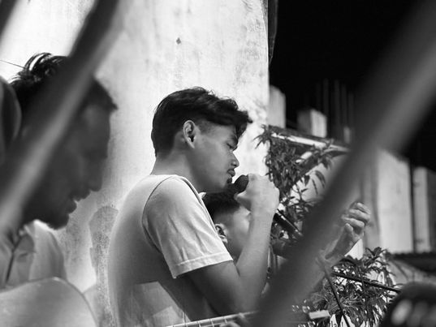

Hi, I am Ceejay Jaron
12-STEM Levi

My Hobbies


About
My name is Ceejay Jaron. I am 18 years old and I live in St. Barbara Deca Home, Marilao, Bulacan. I am a Grade 12 Student of STEM. My hobbies are palying basketball, playing online games, I am fascinated when doing nature trips. During our field trip to Baguio, there are many things for me to see. There are really beautiful. Also during our Prominade this year, I am assigned to be the Prom King. I was overwhelmed and at the same time I feel good about it because it was my first time doing it. Additionaly, I play the guitar and I use to serve in the church. That's all, thank you!